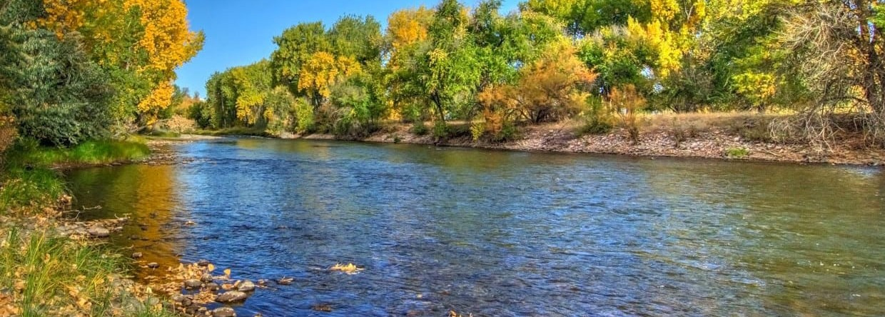
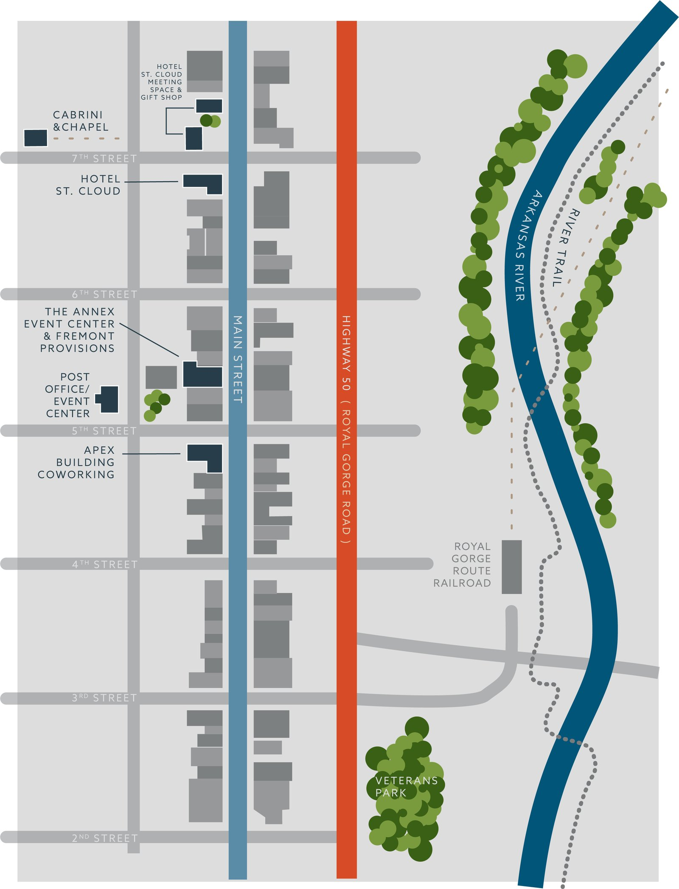
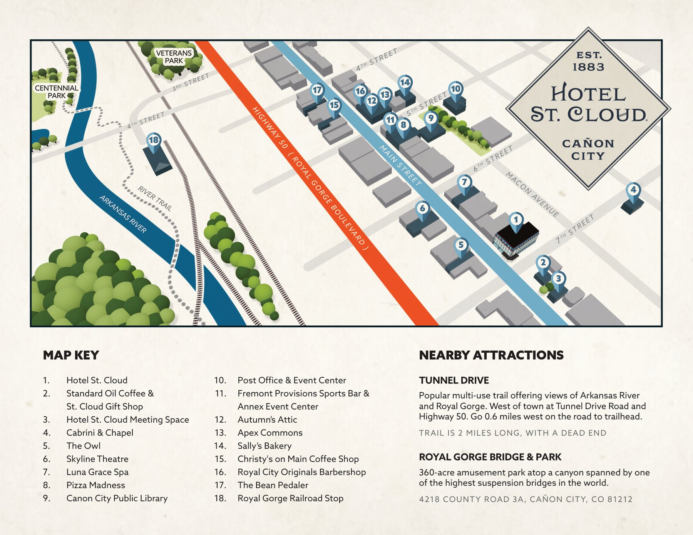

Jeep the gorge
Colorado Jeep Tours runs half-days through the red country. Dust, overlooks, a guide who already knows the roads. Come back sun-tired and ready for a drink.

We would love to host you. Sleep downtown at Hotel St. Cloud. Take a hall for the people you care about. Eat from our kitchens. Spend a day on the Arkansas, in a jeep, or on the train through the gorge. Then come back to Main Street when the light goes.
Cañon City sits at the mouth of the Royal Gorge, the kind of downtown where you can check in, walk to dinner, and still hear the evening from an open window. You do not have to leave the street to eat, sleep, or throw a night. When you do leave, the country starts in minutes, and it is the kind of country people remember.





We have 36 rooms, enough for a wedding party, a board, a family that finally got everyone in the same town. Kings, queens, a few doubles, an ADA superior, and one tilted cowboy for the person who wants a story. When you book 10 or more rooms, we work a group rate. Tell us the dates. We will hold what we can, and we will make the arrival feel like someone was waiting for you.
We do not put rates on this page. Ask. If you need 10 or more rooms, say so in the form. We will come back with what the house can do.
This is the part people dream about first. A wedding that feels like the town showed up. A holiday dinner with everyone at rounds. A morning meeting that does not look like a hotel ballroom. Both halls take about 150. Tables, chairs, linens, and the cleaning come with the room. You walk in, and the night is already waiting.

Marble bar. Letterboxes in the lobby. A civic building that still has its bones, only the night is yours. A short walk from the hotel, around the corner from Main.

Hardwood, a stage, a balcony, and Fremont Provisions already downstairs. Walk in off Main. Go up. Someone always ends up at that bar.


Hotel, dining room, public house, cocktail room, market, and a dance hall upstairs. The Post Office is around the corner on Macon. Coffee is across 7th. You can walk every piece of it without getting in a car, which is usually when a group starts to feel like a group.


The Arkansas Riverwalk, Royal Gorge Anglers, Colorado Jeep Tours, and the Royal Gorge Route are the day trips. Downtown is where you come home.
You do not have to program every hour. These are the days groups actually take from here, and they pair well with a slow night back on Main. We will help you put a stay around whichever one your people keep talking about.
Colorado Jeep Tours runs half-days through the red country. Dust, overlooks, a guide who already knows the roads. Come back sun-tired and ready for a drink.
The Arkansas is right here, gold-medal water you can hear from town. Royal Gorge Anglers will put your people on it, walk-and-wade or a boat, first timers welcome. The riverwalk in fall looks like this.

The Royal Gorge Route leaves town and hangs over the river. Lunch, dinner, or a coach with a window. You are back on Main Street before the evening has to start.
These are samples, not a script. Mix the hall, skip the jeep, add a morning at the Post Office, stay an extra night. We will build it around the people you are bringing.
Good for friends, a family, a team that wants the gorge more than a conference table.
Good for a wedding party, a holiday dinner, a board that still wants a day outside.
A wedding weekend often flips Saturday: ceremony and dinner in the hall, jeep or train on Friday for the people who arrive early. Tell us which shape you are circling.
Picture it: boards downstairs at Fremont Provisions while people drift in. A long table in 1887 when the night should feel like a proper dinner. The War Room when you want the room to get quiet. Fremont Public House when nobody is ready to go upstairs yet. Tell us the feeling. We will cook toward it.
Daytime food, boards, and the kitchen that already knows the Annex. If the gathering is upstairs, this is usually where it starts, and it is a good place to lose a little time before the room asks you back.
Breakfast through dinner. Buffets, bars, plated plates, holiday when it is that season. Open the book, then tell us where you landed. We would rather hear the sentence you keep repeating than a perfect headcount on day one.


A small cocktail room. Dark, slow, not a sports bar. A nightcap after dinner, or a private hour if the group is the right size.

The public bar. Beer, wine, a longer sit. Easy for a group that wants to stay together without a private room.
1887 Historic Eatery is the dining room under the hotel. Standard Oil is coffee across 7th in the morning. Ask if you want a private buyout. We will tell you what the night can hold.
You do not have to have it figured out. A reunion, a wedding, a team, a weekend that just needs a town. Name, email, and a sentence about what you are picturing is enough. We write back from hello@unbridledhospitality.com, and we would rather start a conversation than send you a packet.
Got it. It went to hello@unbridledhospitality.com. We will write back.